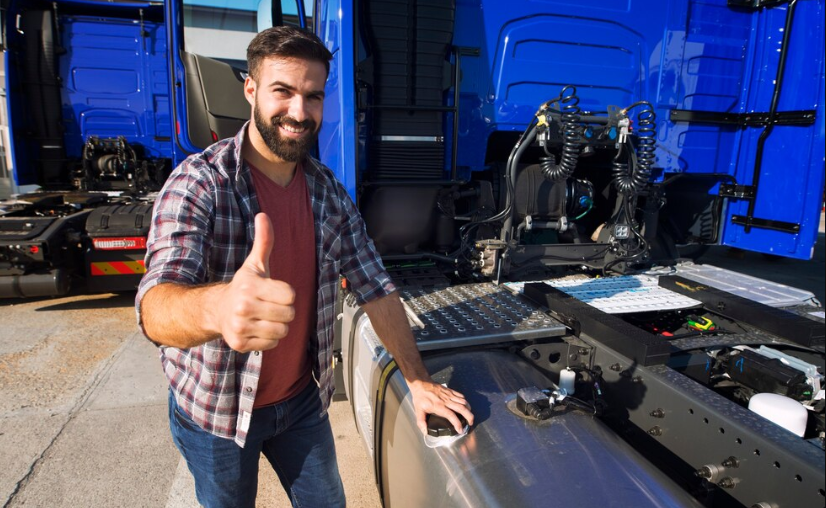

At 24 Hour Truck Repair, our mission is simple: to stand by the men and women who keep this country moving — especially when no one else will.
We know what -45°F feels like. We’ve felt the wind slice through gloves, the sting of steel that bites skin, and the silence of a dead engine in the middle of nowhere. In those brutal Nebraska winters, when the roads are empty and the rest of the world is asleep, truckers don’t stop — and neither do we.
We’re a small, locally-owned repair service built from cold nights, hard work, and a whole lot of grit. What started with a wrench and a beat-up pickup has become a lifeline for drivers stranded in freezing dark — drivers with families waiting on the other end of the haul.
We don’t just fix trucks. We bring warmth back to cabs, life back to engines, and hope back to drivers who feel forgotten.
This business is more than a job — it’s a promise.
To every trucker who’s ever prayed for help on a frozen highway: we’re coming.
Because no one deserves to freeze alone in the dark.
